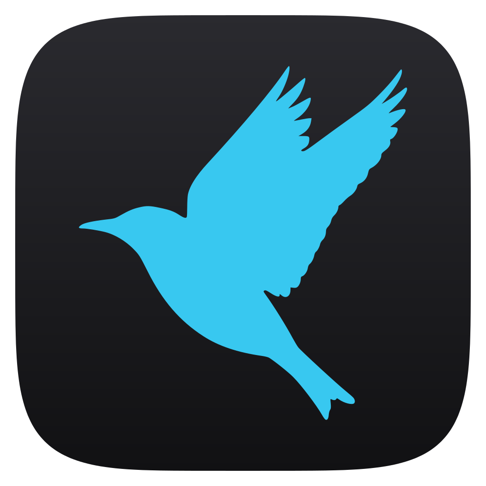

Hedgerow
Small, self-hosted apps
that live together.
A small family of apps you run on your own machines: self-hosted services for your server and fast native tools for your desktop. Each is named after an animal of the hedge, and they share one design, the same principles and, more and more, the same foundation.
The family
Four animals, one hedge.
A hedgerow is a living fence of shrubs and trees, and home to a crowd of animals. The vole lives at its foot, the kestrel hunts along it, the newt hides in its damp corners and the wren nests in its tangles. Each Hedgerow app is one of them, with a job of its own.
-
 Released
Released
Vigilant Vole
Uptime monitoring
A lightweight, self-hosted uptime monitor in the spirit of Uptime Kuma: 30 monitor types, status pages, smart alerts to 40 notification providers, and remote agents that can confirm an outage before you are alerted.
Runs on Docker · Unraid · Proxmox · Linux
-
 Released
Released
Nimble Newt
Text editor · desktop app
A fast, modern text editor with the simplicity of Notepad++ in a small native app. Tabs that survive a restart, find in files, multiple cursors, macros, and files over 256 MB opened in an instant for reading.
Runs on Windows · macOS
-
 Early release
Early release
Keen Kestrel
Error tracking and analytics
Self-hosted error tracking that works with the official Sentry SDKs, and analytics for your apps and sites without cookies or stored IP addresses. Error tracking is out as v0.1, a Docker image; analytics come in v0.2.
Runs on Docker today · Unraid, Proxmox and Linux planned
-
 In design
In design
Wise Wren
Container updates
Keeps your Docker containers up to date without surprises: it updates only what you approve, with a snapshot first, a health check after and a rollback if it fails. Nothing to install yet; follow along on GitHub.
Will run on Unraid first · any Docker host planned
Principles
What they share.
Different jobs, the same habits. Whichever animal you pick, this is what you can expect from it.
-
On your own machines
Services on your own server, tools on your own computer. No account, no cloud in between, and your data stays where you put it.
-
Small, in Rust
One Rust binary per service and a small native app on the desktop. Quick to start and light on memory.
-
SQLite, nothing else
The services keep their data in SQLite. No Postgres, Redis or queue to look after, and one folder to back up.
-
Privacy first
No ads and no third-party trackers. Where an app counts visitors, it does so without cookies, and these sites count theirs with our own Keen Kestrel.
-
One design
An Apple-inspired design system shared across the family: dark and light themes, Inter, keyboard and screen reader support, AA contrast.
-
26 languages
The same 26 interface languages, right-to-left included, so a term means the same thing in every app.
-
Easy to install
Docker, Unraid, Proxmox and plain Linux for the services; installers for Windows and macOS for the editor.
-
MIT licensed
Open source under the MIT license. No paid tier, nothing held back.
Together
How they work together.
A family should be more than a shared colour scheme. Here is what’s true today, and what’s being built.
-
Today
One design system
The same tokens, components, icons and typeface, written down once in Vigilant Vole’s design system. Learn one app and the next feels familiar. Keen Kestrel’s interface will be built on it.
-
Being built now
A shared foundation, vole-kit
Vigilant Vole and Keen Kestrel share one Rust crate, carved out of Vigilant Vole: sign-in and two-factor, users and API tokens, settings, translations, the database plumbing, security headers and the design system. Vigilant Vole works the same while it moves.
-
Planned
The same alert channels
Keen Kestrel will send its alerts through the same notification providers as Vigilant Vole, about 40 of them, from Discord and Slack to ntfy, email and webhooks, set up the same way in both.
Nimble Newt is a desktop app, so it shares the design and the principles rather than the server foundation. Wise Wren, still in design, will build on vole-kit too, and open maintenance windows in Vigilant Vole while it updates your containers.
Also by me.
Projects outside the Hedgerow family, with names and homes of their own.
-

Sylo
Discord and Fluxer bot
A multi-function Discord and Fluxer bot with a MEE6-style web dashboard. Add the hosted instance in one click, or self-host it with Docker or Unraid.
-
Subtrack
iPhone and iPad app
Keeps track of your subscriptions: what they cost per month and per year, when they renew, reminders before a renewal or a free trial ends, and what you’ve saved on the ones you cancelled. Syncs through your own private iCloud, with no tracking.